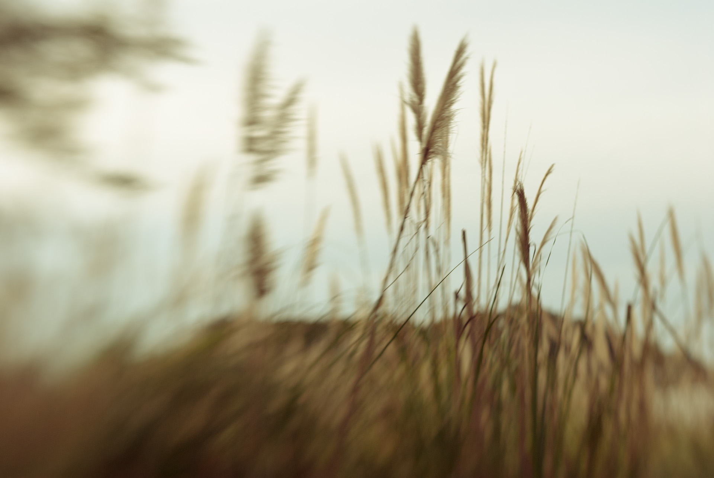
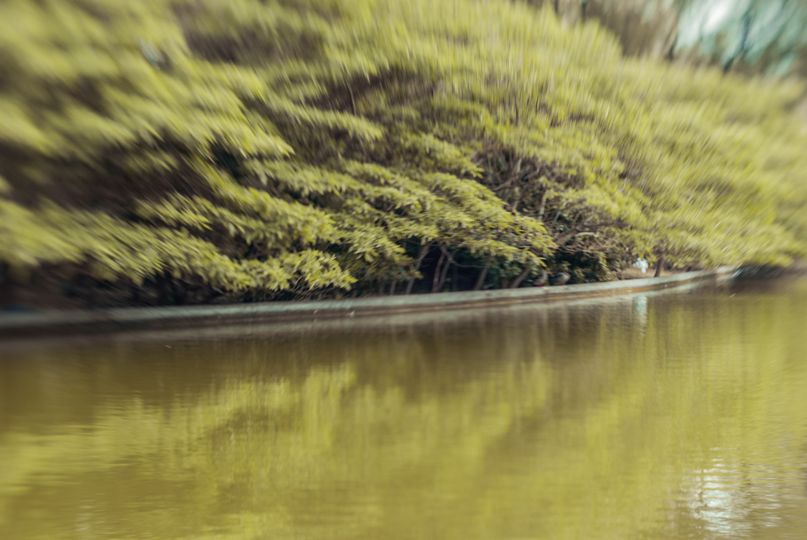

Views
The views are else. They are not pictures.
A picture is a snapshot of reality: a social act. The views are different: more simple, more serene. More concrete, as if a hand could stretch so easily, in a manner so simple, and touch everything into existence -the dreams, the hopes, and ambitions-, and erase all troubles, and fix all cracks in existence.
Their mechanism are complex, from aesthetics to the crafting of moods and imaginaries; and yet it all looks so close, so swift and unadulterated, so shiny and bright, at the reach of a single touch, a will so powerful to vanish the incongruences that haunt the mind.

However powerful, that is but a problem of trust, and not capacity – for our reality is the same. In them is planted the idea that the innate complexity of an overreaching cosmos is compounded to reduce inside a little frame: a little space, enough to hold, and sustain, the weight of all eternity.
For eternity is what we all secretly fear, and wish for, when throughout the years, our bones change; and the weight of time erodes the pillars of aspirations in which we built these dreams of treasure; and when the days become longer, and rain falls straight; and when lights stop, and days blend, becoming a stretch of hoping, these visions – these hold the sans behind.
They calm us; for in them, time freezes.

In them, it may appear that we're a part of something bigger. Grander. Grandiose. In these spaces, life becomes myth – becomes extraordinary.
These things, which are impossible to say -sunk into the depths of our words-, become thus common points, places of worship and rivers of thought. And in that way they open, as flowers blooming under innumerable questions, for the peering of our crescent lights.
And in that process, they complete time. They make us close, ease the living, and keep the rivers flowing, everlasting, until everything is taken from us, and our heads crumble, and our bones sink into the bottoms of the oceans.